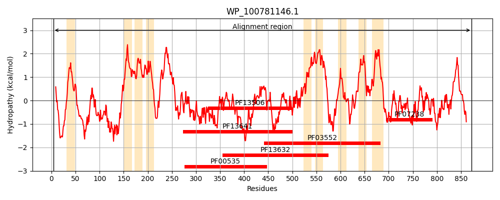
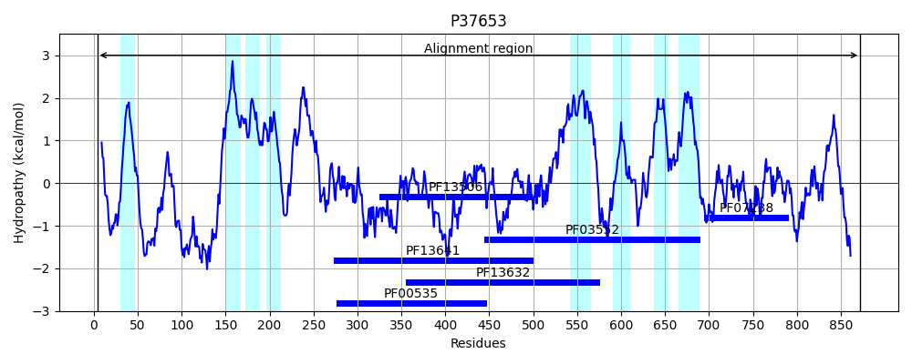
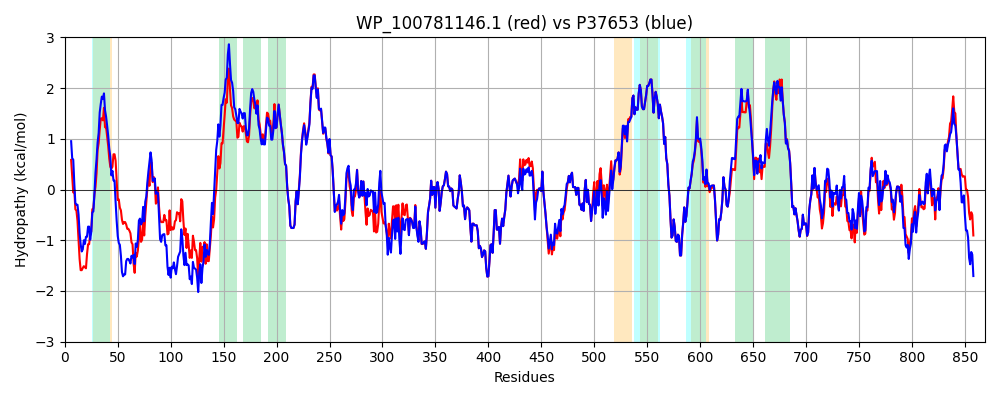

Hit Accession: P37653
Hit TCID: 4.D.3.1.6
Hit Description: gnl|BL_ORD_ID|10123 gnl|TC-DB|P37653|4.D.3.1.6 Cellulose synthase catalytic subunit [UDP-forming] OS=Escherichia coli (strain K12) GN=bcsA PE=1 SV=3
Mach Len: 869
e:0.000000
Query TMS Count : 9
Hit TMS Count: 8
TMS-Overlap Score: 7.400000
Predicted Substrates:CHEBI:3529;(1->4)-beta-D-glucan
BLAST Alignment:
Score: 3890 , Bit scores: 1503 bits, E-value: 0.0e+00, Alignment length: 869, Percentage identity: 83
Query: 4 LSTLLLAPPVGERLRARYDDYRQHGASWLSASLGCLWASLVWALMPLETPRWQAILAHHETYFPHINPHRPRPLDPVRYLLQSLWLLATRVPEPEKKVNWRSLAALEGVHGRYTQWLEKLPEQVNARTGHLDKQKELAHLNPKLRRVILGGVTFCSLVLALMCITQPFNPLSQFIFLMLLWGVALLVRRIPGRFSALMLIVLSLTVSCRYIWWRYTSTLNWNDPVSLVCGIILLFAETYAWVVLVLGYFQVVWPLNRQPVPLPEDMDLWPTVDIFVPTYNEDLNVVKNTIYASQGIDWPKDKLNIWILDDGGREAFRQFAKDVGVHYIARTSHEHAKAGNINNALKYAKGEFVSIFDCDHVPTRSFLQMTMGWFLKEKELAMMQTPHHFFSPDPFERNLGRFRKTPNEGTLFYGLVQDGNDMWDATFFCGSCAVIRRGPLDEIGGIAVETVTEDAHTSLRLHRRGHTSAYMRIPQAAGLATESLSAHIGQRIRWARGMVQIFRLDNPLFGKGLKLAQRVCYANAMLHFLSGIPRLIFLTAPLAFLLLHAYIIYAPALMIALFVLPHMIHASLTNSKIQGKYRHSFWSEIYETVLAWYIAPPTFVALINPHKGKFNVTAKGGLVEEEYVDWVISRPYIYLVLLNLVGVAVGIWRFMYGPENEILTVWVSIVWVFYNLIILGGAVAVSVESKQVRRSHRVEMSMPAAIAREDGHLFSCTVHDYSDGGLGIKIHGDAQVLEGQNARLLLKRGQQEYAFPVRVARVNGSEVGLQLLPLTNQQHIDFVQCTFARADTWALWQDSFPEDKPMESLLDILKLGFRGYRHLAEFSPPSVKVVFRALTSLVAWIVSFVPRRPERAAPTLSADPAMAQQ 872
L+ LL PPV RL RY DYR+HGAS SA+LGC W L W +PLE PRWQ I A H+ +PHIN RPRPLDPVRYL+Q+ WLL + K R+ + L+ + GRY QW+ +LPE+V+ +T HLD++KEL HL+ RR+ILG + SL+LAL+C+TQPFNPL+QFIFLMLLWGVAL+VRR+PGRFSALMLIVLSLTVSCRYIWWRYTSTLNW+DPVSLVCG+ILLFAETYAW+VLVLGYFQVVWPLNRQPVPLP+DM LWP+VDIFVPTYNEDLNVVKNTIYAS GIDWPKDKLNIWILDDGGRE FRQFA++VGV YIART+HEHAKAGNINNALKYAKGEFVSIFDCDHVPTRSFLQMTMGWFLKEK+LAMMQTPHHFFSPDPFERNLGRFRKTPNEGTLFYGLVQDGNDMWDATFFCGSCAVIRR PLDEIGGIAVETVTEDAHTSLRLHRRG+TSAYMRIPQAAGLATESLSAHIGQRIRWARGMVQIFRLDNPL GKGLK AQR+CY NAM HFLSGIPRLIFLTAPLAFLLLHAYIIYAPALMIALFVLPHMIHASLTNSKIQGKYRHSFWSEIYETVLAWYIAPPT VALINPHKGKFNVTAKGGLVEEEYVDWVISRPYI+LVLLNLVGVAVGIWR+ YGP E+LTV VS+VWVFYNLI+LGGAVAVSVESKQVRRSHRVEM+MPAAIAREDGHLFSCTV D+SDGGLGIKI+G AQ+LEGQ LLLKRGQQEY FP +VARV G+EVGL+L+PLT QQHIDFVQCTFARADTWALWQDS+PEDKP+ESLLDILKLGFRGYRHLAEF+P SVK +FR LTSLV+W+VSF+PRRPER+ +D A+AQQ
Sbjct: 4 LTRWLLIPPVNARLIGRYRDYRRHGASAFSATLGCFWMILAWIFIPLEHPRWQRIRAEHKNLYPHINASRPRPLDPVRYLIQTCWLLIGASRKETPKPRRRAFSGLQNIRGRYHQWMNELPERVSHKTQHLDEKKELGHLSAGARRLILGIIVTFSLILALICVTQPFNPLAQFIFLMLLWGVALIVRRMPGRFSALMLIVLSLTVSCRYIWWRYTSTLNWDDPVSLVCGLILLFAETYAWIVLVLGYFQVVWPLNRQPVPLPKDMSLWPSVDIFVPTYNEDLNVVKNTIYASLGIDWPKDKLNIWILDDGGREEFRQFAQNVGVKYIARTTHEHAKAGNINNALKYAKGEFVSIFDCDHVPTRSFLQMTMGWFLKEKQLAMMQTPHHFFSPDPFERNLGRFRKTPNEGTLFYGLVQDGNDMWDATFFCGSCAVIRRKPLDEIGGIAVETVTEDAHTSLRLHRRGYTSAYMRIPQAAGLATESLSAHIGQRIRWARGMVQIFRLDNPLTGKGLKFAQRLCYVNAMFHFLSGIPRLIFLTAPLAFLLLHAYIIYAPALMIALFVLPHMIHASLTNSKIQGKYRHSFWSEIYETVLAWYIAPPTLVALINPHKGKFNVTAKGGLVEEEYVDWVISRPYIFLVLLNLVGVAVGIWRYFYGPPTEMLTVVVSMVWVFYNLIVLGGAVAVSVESKQVRRSHRVEMTMPAAIAREDGHLFSCTVQDFSDGGLGIKINGQAQILEGQKVNLLLKRGQQEYVFPTQVARVMGNEVGLKLMPLTTQQHIDFVQCTFARADTWALWQDSYPEDKPLESLLDILKLGFRGYRHLAEFAPSSVKGIFRVLTSLVSWVVSFIPRRPERSETAQPSDQALAQQ 872 | Protein Hydropathy Plots: |
|---|
|  |  |
Pairwise Alignment-Hydropathy Plot:
|
|---|
|  |